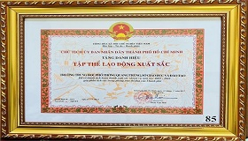
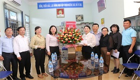
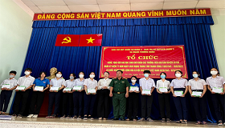

-

Thành tích Trường THPT Quang Trung Năm học 2021-2022
Theo kết quả thi đua cuối năm của Ngành Giáo dục Thành phố, Trường THPT Quang Trung sẽ được nhận Cờ thi đua xuất sắc năm học 2021-2022 của UBND Thành phố. Như vậy, đây là lần thứ hai Trường Quang Trung vinh dự đón nhận Cờ thi đua xuất sắc của UBND Thành phố. Trong những năm qua, Trường THPT Quang Trung đã được Thủ tướng Chính phủ trao tặng 3 bằng khen cho 1 tập thể và 2 cá nhân (đang tiếp tục hoàn tất hồ sơ đề nghị Bằng khen Thủ tướng cho 4 cá nhân xuất sắc khác nữa); được Chủ tịch nước tặng thưởng Huân chương Lao động hạng Ba vào năm 2013. -

Lãnh đạo Huyện Củ Chi thăm và tặng thưởng tập thể trường THPT Quang Trung
Ngày 30/8/2022, đại diện Thường trực UBND và Hội khuyến học huyện Củ Chi do đồng chí Phạm Thị Thanh Hiền - Chủ tịch UBND, Chủ tịch Hội Khuyến học huyện làm trưởng đoàn đã đến thăm 02 trường THPT và 02 trường THCS có thành tích tiêu biểu trong năm học qua trên địa bàn huyện. Trong đó có Trưởng THPT Quang Trung, đạt tỉ lệ học sinh tốt nghiệp THPT 100%. Đồng chí Phạm Thị Thanh Hiền đã chúc mừng, ân cần hỏi thăm, động viên tập thể sư phạm nhà trường và chỉ đạo một số nội dung trọng tâm mà nhà trường cần quan tâm thực hiện trong thời gian sắp tới. -

Nô nức lễ khai giảng năm học mới năm học 2022 - 2023 tại trường THPT Quang Trung
Sáng ngày 05/9/2022, Trường THPT Quang Trung long trọng tổ chức Lễ khai giảng năm học 2022-2023. Trường vinh dự đón tiếp đồng chí Trung tướng Nguyễn Văn Nam, Ủy viên Ban Thường vụ Thành ủy, Tư lệnh Bộ Tư lệnh Thành phố; đồng chí Nguyễn Quyết Thắng, Thành ủy viên, Bí thư huyện ủy Củ Chi; đồng chí Trần Ngọc Huy, Phó Trưởng phòng Giáo dục Trung học Sở Giáo dục và Đào tạo cùng lãnh đạo các xã Phước Thạnh, Phước Hiệp, Thái Mỹ, các thầy cô hưu trí và các nhà Mạnh Thường Quân gắn bó với công tác khuyến học khuyến tài của trường. -
Hoạt động tham quan, trải nghiệm, học tập thực tế
Tham quan, trải nghiệm, học tập thực tế đã và đang là một trong những phương pháp giáo dục hữu ích và hiệu quả. Tham quan, trải nghiệm, học tập thực tế mang lại nhiều giá trị nhất là đối với học sinh. Thông qua quá trình tham quan các bạn không chỉ được thoả mãn nhu cầu nghỉ ngơi, giải trí mà còn được phát triển khả năng nhận thức và tích luỹ kiến thức từ thực tế. Nhằm phát huy điều đó ngày 14/5/2022, Đoàn trường THPT Quang Trung đã tổ chức chuyến tham quan, trải nghiệm, học tập thực tế cho các bạn học sinh của trường kết hợp tổ chức lễ kết nạp cho 447 bạn đoàn viên mới. -

Trao học bổng 13/08/2022
Sáng ngày 13/8/2022, tại Trường THPT Quang Trung (xã Phước Thạnh, huyện Củ Chi, Thành phố Hồ Chí Minh), Ban Chỉ huy Quân sự (CHQS) Quận 3 phối hợp với Ban Trị sự Giáo hội Phật giáo Việt Nam (GHPGVN) Quận 3, Ban Dân vận Quận ủy Quận 3 và Ủy ban MTTQ Việt Nam Quận 3 tổ chức trao tặng học bổng và quà cho học sinh vượt khó hiếu học trên địa bàn huyện Củ Chi, nhân kỷ niệm 77 năm Cách mạng Tháng Tám (19/8/1945 – 19/8/2022) và Quốc khánh nước Cộng hòa xã hội chủ nghĩa Việt Nam (02/9/1945 – 02/9/2022). -

Trường THPT Quang Trung tổ chức lễ đón nhận bằng công nhận đạt chuẩn quốc gia mức độ 1, đạt kiểm định chất lượng giáo dục cấp độ 2 và tổng kết năm học 2021-2022
Hòa trong không khí hân hoan kỉ niệm 132 năm ngày sinh Chủ tịch Hồ Chí Minh (19/5/1890 – 19/5/2022), ngày 26/5/2022, Trường THPT Quang Trung long trọng tổ chức lễ đón nhận bằng công nhận đạt chuẩn quốc gia mức độ 1, đạt kiểm định chất lượng giáo dục cấp độ 2 và tổng kết năm học 2021-2022.

Khối THPT